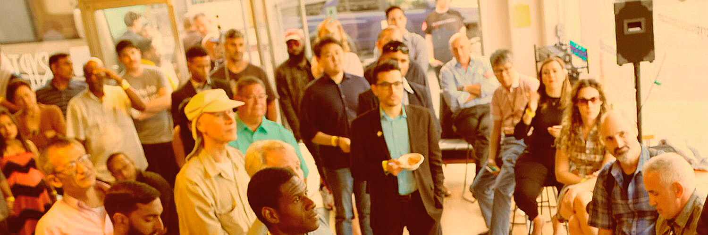

Comprar bitcoins por primera vez es emocionante y abrumador.
Nuestro objetivo es simplificar el proceso para que estés seguro de dar ese primer paso...
En pocas palabras, en realidad no es tan complicado y en muchos aspectos es similar a una transacción financiera normal. Pagas por algo en línea y te lo entregan en tu puerta.
Con Bitcoin... u otra cryptomoneda como Ethereum, Litecoin, Dogecoin, etc., la transacción se realiza a través de una tecnología sofisticada de la que probablemente ya hayas oído hablar muchas veces... llamada 'blockchain'.
Te ayudaremos a configurar una billetera cryptográfica para que tengas el control total de la cryptomoneda que compras. Esto es diferente a la mayoría de los otros intercambios de cryptomonedas, que 'custodian' las cryptomonedas por ti.
No creemos que eso sea sensato en absoluto. Se han pirateado muchos intercambios. Y los reguladores pueden cerrarlos.
Es por eso que nuestro enfoque requiere que tengas tu propia billetera cryptográfica personal, y simplemente transferimos las cryptomonedas que compra a tu propia billetera.
Si estás listo y con ganas de trabajar en tu primera transacción cryptográfica, comienza registrándote para obtener una cuenta Cryptomex gratuita y te guiaremos a través de todos los pasos.
Si deseas obtener más información sobre los engranajes de la compra de Bitcoins u otras cryptomonedas... sigue leyendo para obtener una guía completa para comprar Bitcoins.
Nuestra nueva guía para 2021 está casi lista y la publicaremos pronto. Suscríbete a nuestro boletín para recibir una notificación cuando esté lista, o regístrate para obtener tu cuenta y te la haremos llegar lo antes posible.
Mientras tanto, aquí hay una sección de preguntas frecuentes sobre Bitcoin para comenzar.
Aquí hay algunas respuestas a las preguntas más frecuentes que recibimos cuando las personas visitan el salón de nuestro socio Cryptospace en California.
Bitcoin es una cryptomoneda de igual a igual descentralizada. Bitcoin opera sobre lo que se llama tecnología blockchain y, como resultado, es altamente seguro y encriptado. Es tanto dinero digital como una red de pago. Fue creado por Satoshi Nakamoto, pero probablemente sea un seudónimo. Nadie conoce "su" verdadera identidad. ¡Hoy lo que importa son los Lambos y llegar a la luna! Para conocer más, consulta nuestro artículo destacado ' ¿Qué es bitcoin? '.
La cadena de bloques, o blockchain de bitcoin es una red de pago. Es esencialmente un libro mayor de cuentas descentralizado. Algunos lo llaman las "vértebras" de bitcoin. Una "cadena de bloques" suena exactamente como lo que es: una cadena de bloques. Cada bloque contiene lotes de transacciones.
Los mineros, o hardware informático sofisticado, trabajan las veinticuatro horas del día para validar estas transacciones dentro de los bloques. Estos mineros intentan resolver complejos acertijos matemáticos que ayudan a validar las transacciones en bloque y también permiten la creación de nuevos bitcoins. Una vez que cada bloque se llena y el minero lo valida, se crea un nuevo bloque con transacciones y cada bloque se vincula entre sí mediante un cifrado sofisticado.
Una billetera de bitcoin es una aplicación digital, un dispositivo de hardware o una hoja de papel que almacena y protege las claves privadas que acceden a bitcoin a través de la cadena de bloques. Las billeteras permiten a los usuarios enviar y recibir bitcoins, y algunas billeteras contienen una variedad de cryptomonedas. A menudo se denominan "carteras de activos múltiples". Un ejemplo de una billetera de este tipo es Exodus, que permite a los usuarios almacenar muchas cryptomonedas diferentes. Hoy en día, hay cientos, si no miles, de proveedores de billeteras. Sin embargo, no todos son iguales y algunos han sido descifradas o pirateadas. Asegúrate de realizar una investigación minuciosa sobre cada proveedor de billetera que elijas.
Bitcoin se puede negociar de varias formas. La forma más común es utilizar una plataforma comercial como la solución única de Cryptomex. El proceso de negociación generalmente ocurre cuando un usuario envía una cantidad comercial a través de un sistema automatizado y espera a que un comprador compre en su punto de venta. El intercambio en sí es bastante simple, el usuario envía el bitcoin de su billetera a un exchange y luego puede publicar su cantidad. Sin embargo, cada plataforma generalmente tiene un sistema de billetera diferente para manejar las operaciones, pero en la práctica, la mayoría de las operaciones ocurren de manera similar.
¿Honestamente? En cualquier momento. Los comerciantes tienden a recomendar a las personas que compren bitcoins cuando está a la baja o durante lo que se denomina un "mercado bajista". El viejo dicho "compre barato y venda caro" tiende a aplicarse también al comercio de bitcoins y cryptomonedas. Sin embargo, también depende de tus objetivos. Si tu objetivo es invertir en el futuro de la tecnología, probablemente puedas comprar la cryptomoneda en cualquier momento y quedarte sano, aunque no hay garantía de que ganes dinero. La cryptomoneda en general sigue siendo una clase de activo bastante volátil. Es por eso que durante un mercado a la baja a menudo aquí la gente de la comunidad grita, "when MOON?" para preguntar cuándo la valuación estará tan alta que llegará a la luna (figurativamente, por supuesto).
Esta no es una pregunta fácil de responder y la respuesta puede ser bastante subjetiva. Depende de a quien le preguntes. Si nos basamos solo en el valor y el historial, bitcoin sería la primera opción para la mejor cryptomoneda. Sin embargo, a algunas personas les gustan las monedas que resuelven diferentes problemas o representan diferentes tipos de valor. Por ejemplo, algunas personas a las que les gustan las cryptomonedas que se tratan como dinero elegirán Bitcoin Cash. A quienes les guste la idea de las cryptomonedas como utilidad elegirán un token ERC-20 de tipo específico. Es probable que cada persona tenga una respuesta diferente. En Cryptomex, recomendamos ceñirse a las principales cryptomonedas por capitalización de mercado. Correrás menos riesgo de involucrarte en una estafa o comprar una cryptomoneda que podría perder una participación de mercado considerable en el corto plazo.
Las "monedas alternativas" es un término que se refiere a las cryptomonedas y los activos digitales que no son bitcoins. Estas son cryptomonedas que pueden ser legítimas o ilegítimas, utilizadas como utilidad o seguridad, ser una estafa o un activo valioso. A veces, los miembros del ecosistema crypto se refieren a estas monedas como "monedas de mierda", o shitcoins, aunque no todas las monedas alternativas son una estafa.
Las claves privadas se refieren a la cryptografía especial que proporciona a los usuarios accesibilidad a su cryptomoneda a través de una billetera o un proveedor de billetera. La cryptografía también cifra las carteras para que sean seguras y no se pirateen fácilmente. Una clave privada es una contraseña alfanumérica que tiene exactamente 256 caracteres. La contraseña se elige al azar cuando una persona descarga o instala un dispositivo de billetera. Las claves privadas generalmente se pueden restaurar si un usuario ha guardado su "frase inicial", lo que le permite acceder a sus claves privadas en cualquier billetera que acepte esa designación de frase inicial.
KYC se refiere a "conocer a su cliente", que es un proceso que utilizan las empresas para verificar la identidad de su cliente o clientes. Es un proceso que los bancos y otras instituciones financieras han implementado para prevenir el lavado de dinero, el fraude, la corrupción, el soborno y otras actividades delictivas. Los gobiernos han aplicado estrictamente las políticas de KYC para detener la propagación y el financiamiento del terrorismo global.
Esta es una pregunta común, y subjetiva. Las diferentes carteras tienen diferentes características, funcionalidades y fortalezas. Algunas carteras también son cuestionables en términos de su legitimidad y eficacia. En Cryptomex, recomendamos principalmente el uso de la billetera Exodus, Mycelium, CoPay y blockchain.com. No obstante, recuerde siempre hacer su propia investigación sobre el proveedor de billetera que elija.
¡Sí! Hay tarjetas de débito bitcoin disponibles. Cada año surgen nuevas, aunque a veces la accesibilidad a estas tarjetas puede verse limitada por la ubicación geográfica. Dos tarjetas populares en los Estados Unidos son la tarjeta Bit Pay y la tarjeta Coinbase. Ambas tarjetas son confiables, pero ten en cuenta que usar estas tarjetas significa trabajar con el sistema actual y el de cryptomonedas simultáneamente.
Coinbase es un intercambio de custodia. Mantienen los fondos de sus clientes en su plataforma y administran las claves privadas. Cryptomex es un intercambio sin custodia. Permitimos a los usuarios ejecutar operaciones mientras mantienen sus propios fondos a través de nuestra solución comercial única. También es parte de la misión de Cryptomex mantener un trato personalizado con nuestros clientes al estar allí para ellos si necesitan ayuda. Un sólido servicio al cliente es la base de todo lo que hacemos.
Somos un intercambio de cryptomonedas centrado en el ser humano que ofrece un trato de conserjería para nuestros clientes. Tenemos una mesa de operaciones que permite a los usuarios administrar sus propias claves privadas al mismo tiempo que pueden intercambiar cryptomonedas. Estamos ubicados en México, y cumplimos totalmente con todas las leyes y regulaciones que rigen la compra y venta de activos digitales.
Sus claves privadas, que están representadas por su "frase inicial", deben protegerse a toda costa. Debe escribir su frase inicial en una hoja de papel y no dejar que nadie la vea. Si alguien obtiene acceso a su frase inicial, puede tomar su dinero simplemente ingresando su frase inicial en una billetera compatible. No es recomendable tomar fotografías digitales o capturas de pantalla de sus frases iniciales o claves privadas, porque un hacker experto podría acceder a ellas a través de medios nefastos.
No hay obligación de traer a nadie a bitcoin. Llevar a alguien a bitcoin es similar a llevarlo al automóvil o a la electricidad. Bitcoin es solo una herramienta o tecnología que se difunde de forma natural debido al valor que ofrece a la sociedad. Dicho esto, no hay nada de malo en presentar Bitcoin a nuevas personas. Si alguien que conoces está fascinado con el dinero y atraído por la tecnología, le encantará Bitcoin y estará feliz de que se lo hayas mostrado. La revolución de bitcoin está completamente en marcha, y cada vez más personas se están incorporando a bitcoin en virtud de su ubicuidad y utilidad.
Los intercambios de cryptomonedas son negocios que se especializan en permitir que los titulares de cryptomonedas intercambien sus monedas por otras monedas, o incluso por dólares. Estos intercambios operan principalmente a gran escala y tienen sistemas establecidos para permitir a los usuarios comerciar a través de sistemas automatizados.
La respuesta a si son seguros es una pregunta más complicada. Al igual que con las cryptomonedas, no todos los intercambios son iguales. Algunos intercambios se crearon para estafar a los usuarios o lavar cryptomonedas. Otros intercambios como Cryptomex, Kraken, Poloniex y Bittrex tienen operaciones de gran reputación, y algunos de ellos están asegurados para proteger a sus clientes.
La seguridad de un intercambio también depende de cómo realice negocios. La mayoría de los intercambios, como Kraken, Poloniex y Bittrex, actúan como carteras de custodia, lo que significa que guardan la cryptomoneda de sus clientes. Sin embargo, Cryptomex es un intercambio sin custodia y nuestros clientes pueden tener sus propias claves. Queremos maximizar la seguridad de nuestros clientes y asegurarnos de que también sean los únicos responsables de sus billeteras y claves privadas.
No completamente. La mayoría de los intercambios de cryptomonedas se denominan "intercambios de custodia". Lo que esto significa es que conservan la cryptomoneda de sus clientes dentro de sus propias carteras de almacenamiento en frío. El problema es que estas carteras suelen estar alojadas en un servidor centralizado. Este hecho significa que los intercambios suelen ser el objetivo de los piratas informáticos, por lo atractivo de hacer un robo masivo. Hay innumerables historias sobre varios intercambios pirateados, el más famoso, por supuesto, es el exchange Monte Gox. Dicho esto, las casas de cambio están renovando y modificando constantemente sus prácticas y políticas de seguridad, lo que los hace más seguros a medida que pasa el tiempo. No obstante, la mayoría de estos exchanges todavía almacenan su cryptomoneda en sus servidores a través de sus claves privadas; y mientras continúen con esta práctica, no estarán completamente seguros.
No. Nunca es demasiado tarde para comprar bitcoins, pero esa mentalidad también depende del comprador. Es probable que para una persona que quiera hacerse rico sea demasiado tarde para comprar bitcoins (aunque algunas personas todavía sospechan que el bitcoin puede dispararse). Es posible, pero comprar bitcoins no solo debe consistir en invertir para hacerse rico, sino también en invertir en el futuro de la economía, el dinero, la tecnología y el sistema financiero. De esta forma, nunca es demasiado tarde para comprar bitcoins. Comprar bitcoins es un acto de independencia financiera, e incluso ahora la mayoría de la gente ve ganancias modestas después de comprar bitcoins. Y aunque se ha declarado muerto muchas veces, la tendencia del valor de Bitcoin todavía ha tendido a moverse hacia arriba.
Okay, esto suena más complicado de lo que es. Barrido e importación (sweep and import) son formas de transferir una clave privada a una billetera de software. La importación mantiene los Bitcoins en la clave privada original, mientras que Sweep envía los Bitcoins a una clave privada completamente nueva conectada a la billetera del software. Como regla general, se recomienda barrer a importar.
Debe barrer una clave privada si alguien más tuvo acceso a la clave privada (por ejemplo, si alguien le dio una billetera de papel o la clave privada se publicó en línea). Esto evitará que un pirata informático potencial pueda gastar los bitcoins asociados con él. Como regla general, si tiene dudas sobre si debe importar o barrer una clave privada, probablemente debería barrerla. El barrido resuelve muchos de los problemas que pueden surgir al realizar una importación.
Una billetera de papel requiere el uso de una impresora que genera y transfiere una nueva dirección cryptográfica y una clave privada al papel. Funciona al tener una nueva clave privada única y una dirección bitcoin, generalmente generada por un sitio web. Cuando esté completo, querrá tratarlo como dinero en efectivo. Tan pronto como se configure, el proceso se completará, el sistema eliminará cualquier rastro de sus datos de la base de datos. Además, las carteras de papel de bitcoin implican que bitcoin no está en la cadena de bloques hasta que se activa la dirección y se agregan las monedas. Debe ingresar la información en línea y conectar su billetera a la cadena de bloques en vivo o (Sweep Private KEY) a la billetera en línea. En esta etapa, se denomina almacenamiento en frío. Las carteras de papel son la solución de almacenamiento a largo plazo más segura para bitcoins. No siempre es seguro almacenar cryptomonedas en línea o en un intercambio de custodia porque a menudo son pirateadas.
Las transacciones de blockchain se pueden ver fácilmente en varios exploradores de bloques diferentes. Cada transacción de bitcoin tiene un ID de TX asociado, que para la mayoría de los propósitos actúa como una factura de recibo. Las diferentes cryptomonedas suelen tener sus propios exploradores de bloques asociados. Por ejemplo, un explorador de bloques popular para Ethereum es etherscan.io/. Para Bitcoin, blockchain.com es solo una de las muchas opciones populares. Si deseas llegar a la luna, debes saber cómo ver los ID de tus transacciones en los exploradores de bloques.
¡Cryptomex es el mejor sitio para comerciar! No, en realidad, queremos, deseamos que pueda operar mientras mantienes tus propios fondos. Permitimos a los usuarios comerciar manteniendo al mismo tiempo su libertad financiera.
Hay muchos recursos educativos increíbles disponibles en línea. Recomendamos usar bitcoin.com, que está diseñado específicamente como un portal educativo, aunque se enfoca principalmente en bitcoin cash. Para un enfoque más general, coindesk.com también es un gran recurso educativo. Otros incluyen Bitcoin Magazine, CoinTelegraph y Hacker Noon (aunque no son estrictamente cryptográficos). También puede comunicarse con nosotros para obtener más información.
El protocolo bitcoin o blockchain no se puede hackear fácilmente. En otras palabras, la red de pago en sí es extremadamente resistente y puede resistir poderosos ataques de hackeo. Por supuesto, la gente escucha que "bitcoin" es hackeado todo el tiempo. Seamos claros. La plataforma bitcoin en sí misma no es el objetivo de los hackers informáticos. En cambio, los hackers informáticos apuntan a carteras y servidores. Es a través de estos conductos que obtienen claves privadas que les permiten robar cryptomonedas de esas carteras y servidores. Es una buena práctica mantener siempre una cantidad baja de fondos en las billeteras de uso diario y mantener una cantidad de fondos ahorrados en almacenamiento en frío en una billetera de hardware o de papel que no esté constantemente en contacto con Internet.